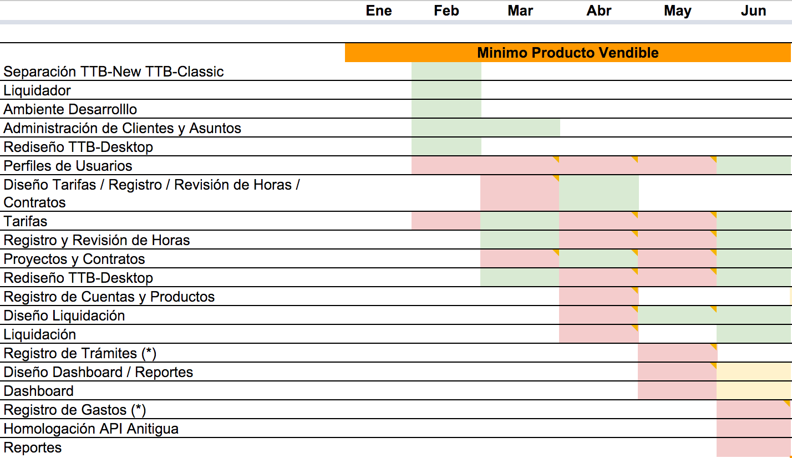

Fighting the "not my job" syndrome


Refactoring
function sql2date($string, $format = '%d-%m-%Y') {}
function sql2fecha($string, $format = '%A %d de %B de %Y', $mensaje_error = "") {}
function sql3fecha($string, $format = '%A %d de %B de %Y a las %H:%M hrs.') {}
function fecha2sql($fecha, $default = "actual") {}
function fechahora2sql($fecha, $default = "actual") {}
Not my job!
Architecture
def self.list_active
Admin::Account.where(
'subdomain IN ("cverdugo","furra","sw","bmj","micp","demo","dellafiori")'
)
end
Not my job!
UI Design

Not my job!
Product Planning

Not my job!
Other
- Client with an urgent problem on lunch time? Not my job!
- Server is down on a sunday morning? Not my job!
- No fitness activities? Not my job!
- Nobody made the reservation of the soccer field? Not my job!
- Team is feeling down? Not my job!
- A team member is having trouble outside of work? Not my job!
- A team member is getting stuck in his career? Not my job!
Is that right?
Let's see
- It is my job? Nope!
- It should be my job? Nope!
- I'm getting paid for that? Nope!
- Does anybody else care if I do that? Nope!
So... should I care?

unless...
It hurts

Fighting the syndrome
Get out of your comfort zone

Try to think why it's something important for others
Find it and act on it!
Make it yours

So when a new challenge arrives
Say yes

And fight the syndrome!